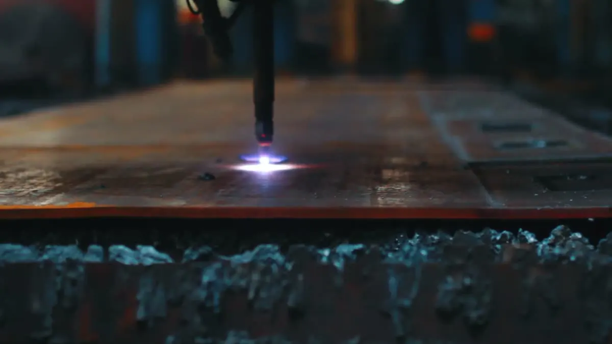
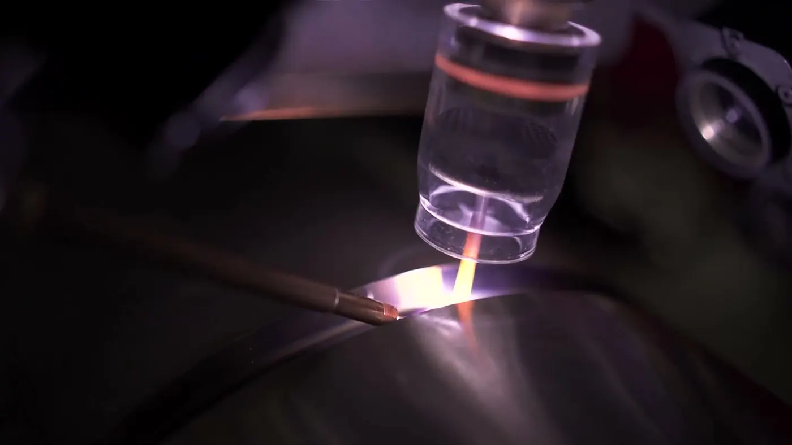

Laserschneidenin Peiting · Oberbayern
Aus der Blechtafel wird die Kontur, die auf Ihrer Zeichnung steht — als Einzelteil oder in der Stückzahl, die Sie brauchen.
So läuft es bei uns.
Schicken Sie uns DXF, DWG, STEP oder ein bemaßtes PDF: Wir schneiden Laserzuschnitte aus Stahl, Edelstahl und Aluminium, mit Durchbrüchen, Ausklinkungen und Konturen, wie die Konstruktion sie vorgibt. Sollen die Teile weiterverarbeitet werden, folgen Abkanten, Schweißen, Oberfläche und Montage im selben Auftrag.
Anfrage senden
Was zum Zuschnitt gehört.
Laserzuschnitte nach Zeichnung
DXF, DWG, STEP oder PDF mit Maßen — wir setzen die Kontur so um, wie sie gezeichnet ist.
Stahl, Edelstahl, Aluminium
Die drei Werkstoffe, aus denen im Maschinenbau die meisten Blechteile entstehen.
Durchbrüche & Ausklinkungen
Lochbilder, Langlöcher und Ausklinkungen entstehen im selben Arbeitsgang wie die Außenkontur.
Entgraten auf Wunsch
Sagen Sie uns, ob die Teile entgratet weitergehen sollen — dann sind sie direkt montagefähig.
Zuschnitt für Kantteile
Wird das Teil anschließend gekantet, berücksichtigt die Abwicklung die Biegezugaben.
Einzelteil bis Serie
Ein Muster zum Ausprobieren oder die Stückzahl für den Auftrag.
Laserschneiden für den Maschinenbau in der Region.
Unsere Werkstatt liegt am Zeißlerweg in Peiting, im Landkreis Weilheim-Schongau zwischen Oberbayern und Allgäu. Für Betriebe aus Schongau, Peißenberg, Weilheim, Landsberg am Lech oder Kaufbeuren sind die Wege zur Abstimmung und zur Abholung kurz; Teile in größerer Entfernung liefern wir nach Absprache.
Häufige Fragen
Welche Dateiformate verarbeiten Sie?
Am liebsten DXF oder STEP. Für ein Angebot reicht auch ein PDF mit Maßen oder eine bemaßte Skizze — wir zeichnen dann nach und stimmen das Ergebnis mit Ihnen ab.
Schneiden Sie auch Edelstahl und Aluminium?
Ja. Nennen Sie uns Werkstoff und Blechdicke, dann sagen wir Ihnen, ob und wie wir das Teil schneiden.
Bekomme ich die Teile entgratet?
Wenn Sie es wünschen, ja. Geben Sie es bei der Anfrage an, damit es im Angebot steht.
Wie schnell geht ein Zuschnitt?
Das hängt an Auslastung, Material und Stückzahl. Mit dem Angebot nennen wir einen Termin, auf den Sie planen können.
Passt oft dazu.
 POS. 02
POS. 02Stanzen
Stanzteile und Lochbilder — wenn jedes Teil dem ersten gleichen muss.
Ansehen POS. 03
POS. 03Abkanten & Biegen
Aus der Fläche wird das Teil: Winkel, Profile, Halter und Gehäuse.
Ansehen
POS. 04WIG- & Laserschweißen
WIG-Schweißen und Laserschweißen — saubere Nähte an Stahl, Edelstahl und Aluminium.
AnsehenSchicken Sie uns die Kontur.
DXF, DWG oder PDF genügen — wir nennen Preis und Termin für den Laserzuschnitt und sagen offen, wenn eine Kontur so nicht geht.
- Zeichnung schicken
- Angebot mit Termin
- Fertigung in Peiting
- Abholung oder Lieferung